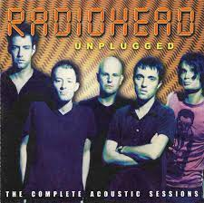

Selamat datang di situs web musik kami! Kami adalah sumber utama untuk
semua hal musik, dari berita terbaru hingga ulasan album dan panduan
konser.Dengan berbagai fitur interaktif, kami mengundang Anda untuk
merasakan musik dengan cara yang berbeda. Di sini, musik bukan hanya
suara, tapi juga cerita dan emosi.
datang di tempat di mana setiap lagu memiliki makna sendiri.Ayo,
jadilah bagian dari komunitas musik kami!

Nirvana adalah nama sebuah grup band dari Kota Aberdeen, Washington,
Amerika Serikat, kemudian akhirnya mereka mendapatkan kesuksesan di Kota
Seattle, Amerika Serikat, yang terkenal dengan aliran musik grunge, atau
yang dikenal juga dengan Seattle Sound. Nirvana mulai digemari, dan
dikenal oleh dunia sejak dirilisnya album mereka yang berjudul
Nevermind, dengan single yang dijagokan yaitu Smells Like Teen Spirit,
single ini membuat mereka mendapatkan trofi The Best Alternative/Rock
Band dan sempat menduduki tangga nada pertama di Billboard Amerika.
Nirvana terdiri dari Krist Novoselic, Kurt Cobain, dan Dave Grohl . Band
ini bubar setelah Kurt Cobain bunuh diri akibat overdosis sesudah
menghisap kokain di tempat tinggalnya pada tahun 1994. Grup ini dibentuk
di Washington, Amerika Serikat, pada 1987. Semua lagu - lagu Nirvana
diliris oleh sang vokalis/gitaris Kurt Cobain dan Krist Novoselic yang
mengisi bass Dave Grohl penabuh drum, grup ini melepas album pertama
mereka tahun 1989 di bawah sebuah label indie. Mereka menertawakan aku karena aku berbeda. Aku menertawakan
mereka karena mereka semua sama.
- Kurt Cobain ( vokalis Nirvana). Berita Selengkapnya :
Nirvana band
sebuah grup musik eksperimental rock alternatif asal Britania Raya, terbentuk pada tahun 1985. Band ini terdiri dari Thom Yorke (vokal utama, gitar ritmis, piano), Jonny Greenwood (gitar utama, keyboard, penyintesis modular, Ondes Martenot, glockenspiel, dan lain-lain), Ed O'Brien (gitar, vokal, perkusi tambahan), Colin Greenwood (gitar bas, penyintesis, Phil Selway (drum, perkusi).
Radiohead merilis singel pertama mereka, "Creep", pada tahun 1992. Pada awalnya lagu ini tidak sukses, tetapi menjadi hits di seluruh dunia beberapa bulan setelah rilisnya album debut mereka, Pablo Honey (1993). Popularitas Radiohead naik di Britania Raya dengan rilisnya album studio kedua mereka, The Bends (1995). Album ketiga Radiohead, OK Computer (1997), membawa ketenaran dan kesuksesan internasional. Terkenal karena produksinya yang kompleks dan tema-tema alienasi modern, OK Computer sering diakui sebagai rekaman landmark tahun 1990-an dan salah satu album terbaik dalam musik populer.
Kid A (2000) dan Amnesiac (2001) menandai perubahan gaya musikal Radiohead, menggabungkan musik elektronik, jazz, musik klasik dan Krautrock. Meskipun Kid A membuat bingung pendengarnya, itu kemudian mendapatkan pujian luas dari para kritikus musik. Hail to the Thief (2003), sebuah campuran rock yang didominasi gitar, elektronik dan lirik-lirik yang terinspriasi dari perang, adalah album terakhir band ini untuk label rekaman mayor mereka, EMI. Radiohead secara independen merilis album ketujuh mereka, In Rainbows (2007), awalnya sebagai unduh digital di mana para pelanggan bisa menetapkan harga mereka sendiri, dan selanjutnya dalam format fisik yang sukses dalam kritik dan tangga album di seluruh dunia. Radiohead merilis album kedelapan mereka, The King of Limbs (2011) dalam format yang beragam. Pada Mei 2016, setelah mengeluarkan dua singel, Radiohead merilis album kesembilan mereka, A Moon Shaped Pool. Radiohead
